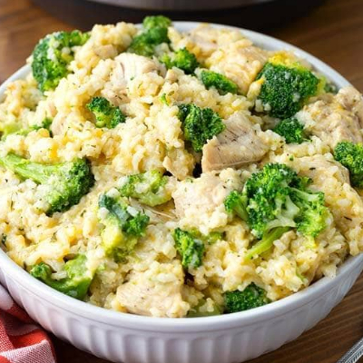

Home
Beef Stroganoff
Cheesy Chicken Rice
Loaded Potato Soup
Porkchops and Rice
Family Favorite Instant Pot Recipies
Ready..
2 boneless skinless chicken breasts
1 teaspoon minced garlic
1 teaspoon black pepper
1 teaspoon salt
1/2 onion chopped
2 cups chicken broth
10.5 oz cream of chicken soup
3 cups cooked white rice
2 cups shredded cheese
3 cups broccoli florets
Set...
1. Place everything except the white rice, broccoli, and cheese in the Instant pot.
2. Cover and set the valve to sealing. Set the pressure for 30 minutes.
3. While waiting for the instant pot, cook rice and steam broccoli (seperately) on stovetop.
4. Follow manufacturer’s instructions to quick release, then remove lid. Remove and shred chicken. Add chicken, rice, cheese, and broccoli into the pot.
5. Stir and let set for 5-10 minutes before serving.
Yum!
